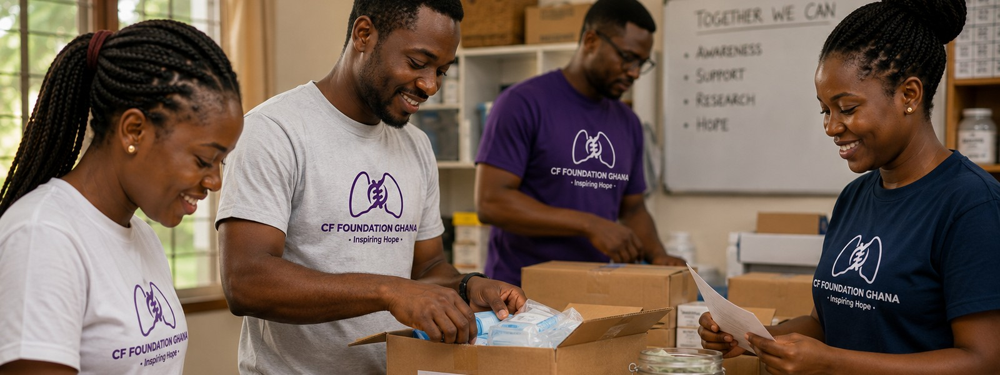

Research & data
Treating the protein, not just the symptoms.
The biggest shift in CF care in the last decade hasn't been a new antibiotic. It's a class of drugs called CFTR modulators, which target the underlying protein defect itself rather than just managing its effects. Understanding them also means understanding why they remain largely out of reach in Ghana.
In short: a CFTR modulator is a medicine that helps the faulty CFTR protein made in CF work more normally, rather than just treating the mucus, infections, or digestive problems it causes.
CFTR modulators
How the treatment generations built on each other
The first modulator generation held CFTR's channel open longer once it reached the cell surface, improving chloride flow for a specific subset of mutations.
Correctors help misfolded CFTR protein fold properly so more of it survives to reach the cell surface in the first place.
Modern triple-combination modulators pair correctors with a potentiator, dramatically improving lung function for the mutations they cover, most famously for F508del, the most common CFTR mutation worldwide.
Why Ghana is left out
Modulators are matched to mutations, and Ghana's mutations aren't well mapped
CFTR modulators only work if a person's specific mutation is known to respond to them. Because African CFTR variants are so underrepresented in global databases, many Ghanaian patients, even if diagnosed, may carry mutations that haven't been studied well enough to know which modulator, if any, would help them. Cost and drug availability compound the problem further.
Even where a matching mutation is confirmed, cost puts these drugs out of reach for almost everyone: Trikafta, the leading triple-combination modulator, carries a US list price of roughly $300,000 per year (list price, Vertex Pharmaceuticals), a figure that dwarfs household incomes across Ghana and most of sub-Saharan Africa, insured or not.
Our research priorities
Where we're focusing first
Bridging that gap is exactly what this research is for.
Discovery
Variant discovery
Partnering with labs to identify and characterize CFTR variants specific to Ghanaian and West African populations.
Database
Database contribution
Submitting verified Ghanaian variant data to resources like CFTR2 and ClinVar to bridge the representation gap.
Partnerships
Clinical partnerships
Working with hospitals and genetics labs to build referral and testing pathways where none currently exist.
Advocacy
Advocacy for access
Raising the case for modulator therapy access as African CFTR data makes eligibility clearer.
Common questions
What people usually ask about our research
What is a CFTR variant database?
A shared record of known CFTR mutations and how each one affects the protein, used by clinicians and labs worldwide to interpret a patient's genetic result and predict which treatments might help.
How is Ghanaian genetic data being collected?
Through partnerships with hospitals and genetics labs, sequencing CFTR genes from consenting patients and contributing verified findings to shared, internationally recognized databases.
Will this research be published?
Yes. Findings are intended for peer-reviewed publication and submission to databases like CFTR2 and ClinVar, so they become part of the global reference other clinicians and researchers rely on.
How can a lab or clinician get involved?
Reach out through our Contact page. We're actively building partnerships with hospitals and genetics labs in Ghana and the wider region.
Get involved in this work
Help bridge this gap
Clinician, geneticist, or lab?
If you want to contribute to bridging this gap, we'd like to hear from you.
Get in touch
Want to support the work directly?
See the ways to give, volunteer, or partner with the foundation.
See how to help